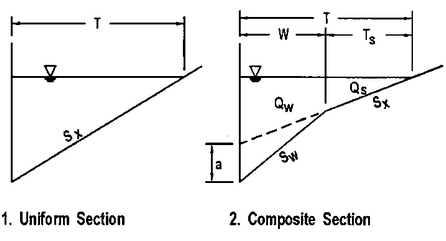

Curb and gutter inlets (grates, curb openings, and slotted inlets) have their flow capture computed using the methods described in the Federal Highway Administration's Urban Drainage Design Manual, otherwise known as HEC-22. As these methods assume a triangular street cross-section (see below), curb and gutter inlets can only be placed in conduits that are assigned SWMM's Street cross-section shape.

The specific equations HEC-22 uses to compute flow capture depend on whether the inlet is located on a continuous sloping grade or at a sag (or sump) point.